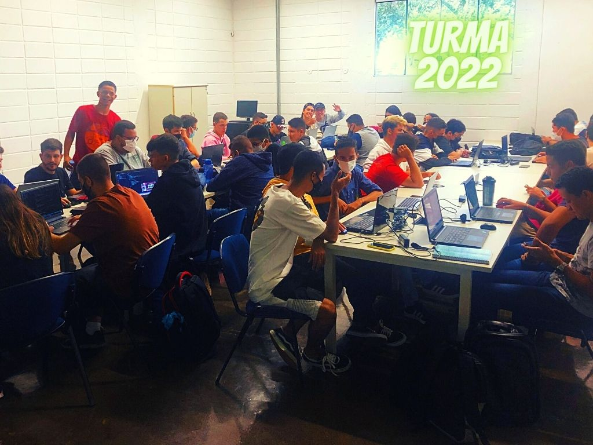

Iremos verificar todos os assuntos que vimos nesse primeira parte.
A avaliação é um momento de reflexão onde você pode aprender mais sobre o conteúdo, ainda poderá ter uma nova perspectiva sobre o assunto. As tecnologias aplicadas a agricultura poderá trazer para você um diferencial. Por isso, é importante que você tenha um bom tempo para responder as perguntas. Estude e pratique!
- 1. Stream de dados
- 2. Bigdata
- 3. Tidos de dados (Estruturados e Não Estruturados)
- 4. 3 e 5 Vs do Bigdata
- 5. Websemantica (Tim Bernes Lee)
- 6. Tecnologias de Cloud
- 7. Map reduce
A avaliação será on-line porém respostas repetidas serão consideradas como erradas. Aproveite a avaliação para aprender mais sobre o tema.